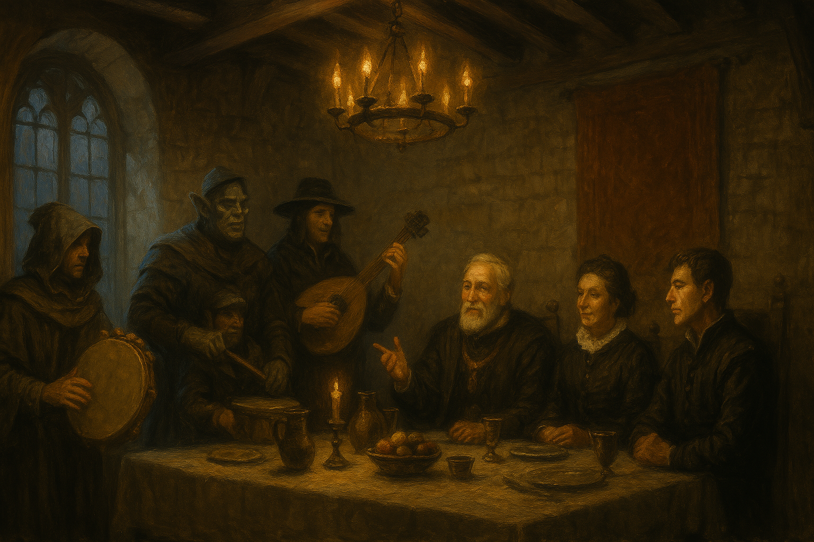

Chapter 2: Sun and Moon
The Blooming of Macksohn


The Blooming of Macksohn
15048.11.08
夜裡，冒險者們決定在日出酒館關門後回到店內和暫居於此的龍恩討論後續規劃。
薩梅爾和帕拉丁使用了稍早在崔尼斯劇院遇到的經紀人給的名片，傳送到了一間辦公室。門上了鎖，且室內空無一人，也沒有光線。兩人從窗戶踏入了外頭。深夜，兩人完全不知道自己身在何處。最後，兩人決定在辦公室旁的小巷過夜，輪流守夜。薩梅爾在守夜時看見了這間辦公室的名字叫「派頓」。
雷米、米多莉、YHWH等人在日出酒館門口敲門卻沒有任何回應，因此雷米用了他的工具開鎖，進入了日出酒館。正在鋪床的龍恩聽到了外頭有聲響，小心翼翼地來到了門口，看見是他所熟識的三人才放下了戒心。四人討論著該如何探索坎曾說過自己的住處，酒館的二樓，從店內內找到了一把梯子，最後卻決定先放棄往天花板鑿洞的計畫。
而後，龍恩和雷米起了爭執。雷米各種鬼祟的行徑讓龍恩起了疑心，兩人大打出手，連YHWH和米多莉也加入戰局，最終三人成功擊暈了雷米。商討著該把雷米留在店內，還是帶回城門旅店，最終龍恩被說服了，將雷米五花大綁後壓在桌上。此時已過凌晨三點，而米多莉和YWHW回到城門旅店時也四點鐘了，兩人便呼呼大睡。
輪班守夜的帕拉丁也不好過。他看見了一個從遠處接近的斗篷人，令他起疑。小心躲在巷內的他，卻不知怎的還是被斗篷人發現了，露出了他發出紅光的雙眼，而帕拉丁也跌到了地上。然後斗篷人就消失了。
天亮了，還在守夜的帕拉丁看見了經過的人群交頭接耳，不久後，兩個衛兵走進了巷子內，走向熟睡的薩梅爾。情急之下，帕拉丁將晚上撿拾到的石頭砸向一旁的窗子。奇異的角度，讓破碎的玻璃刺上了其中一位衛兵的後腦勺。另一位衛兵趕緊回頭尋找「犯人」。此時已清醒的薩梅爾釋出善意，為這名受傷的衛兵治療。兩人寒暄著，直到衛兵離開。然而，就在衛兵離開，經過帕拉丁時，帕拉丁喊了一聲薩梅爾的名字，引起了衛兵的注意。帕拉丁表示衛兵聽錯了，他叫的是「山謬」。在雙方陷入僵持之時，一名正裝的男子輕鬆寫意的走了過來，輕鬆得打發了衛兵。他伸出手，和兩人致意，表示自己就是兩位昨日遇見的經紀人，自稱月先生，並表示以後遇到衛兵這種小事情，只要表示自己是月先生的客戶，就不會有問題了。
月先生帶著兩人回到了辦公室內，累壞了的帕拉丁在椅子上打起瞌睡，甚至連薩梅爾的表演也叫不醒他。月先生感到滿意，表示應該帶自稱為「戴克松」的薩梅爾見見他的客戶，柏納斯一族。三人敲定隔天中午來辦公室會合。月先生也表示歡迎戴克松帶他的樂團（薩梅爾表示他們是「戴克松與他的快樂夥伴」）一起來。在月先生向兩人指引了回到日出酒館的路線後兩人便離開了。
熟睡的龍恩和雷米在日出酒館老闆的呼喚聲中醒了過來。老闆十分自責讓龍恩守店卻遇上了惡徒，表示自己願意出錢，讓龍恩在外面找個旅店繼續住。龍恩背著雷米走出店外。假寐的雷米在睡眠不足的龍恩背上作亂，搞得龍恩摔倒在地上。一群好心人士圍了過來幫忙。龍恩向大家詢問怎麼前往城門旅店，卻發現這些人都不知道這個旅店。後來他才突然發現城門旅店是個窮旅店，這些高社經地位的人們自然不會知道。一位路人找了路邊一位流浪漢，給了一枚金幣，便讓流浪漢領著龍恩去找城門旅店。
流浪漢幫忙龍恩背起雷米，卻在雷米的躁動下也跌倒了。雷米和龍恩起了爭執，龍恩叫喊著雷米是竊賊，雷米則叫著龍恩是「沃瓦倫的惡魔」，周圍的群眾面面相覷，直到衛兵來了，而雷米秀出了手上的太陽徽記，鬧劇才告了一段落。衛兵警告龍恩別惹事，因為他不知道自己惹上的是什麼。看戲的群眾們也一哄而散。
落魄的龍恩帶著流浪漢回到了日出酒館用餐，還點了些酒，詢問了關於光之神教與崔尼斯劇院的事。流浪漢表示自己沒去看過崔尼斯劇院的任何劇，央求著龍恩請他看，最後被龍恩打發走了。中間疲憊的薩梅爾和帕拉丁也在日出酒館用完了餐，但大家都太疲累了，薩梅爾和帕拉丁與龍恩都沒看見彼此，擦肩而過。而後，龍恩找了附近一家稱為「白磚石」的旅店住了下來。
帶走雷米的衛兵把雷米拉到了巷子內，向雷米訓斥了一番，要他做事小心點，也告訴他下一次組織不會這麼輕易放過他了。接著，他在雷米沒有刻太陽徽記的手上，用匕首硬生生畫了一個粗糙的太陽徽記作為警告，接著便離去了。
中午睡醒後，薩梅爾和帕拉丁在城門旅店房間外會面，並來到YHWH和米多莉分別的房間。大家討論著昨晚與今早分別的狀況，一致認為現在他們所見到的雷米肯定有問題，於是請米多莉試著和城門旅店的櫃台凱文遊說，希望能請他幫忙打開雷米住的房間，進去搜索一下。經過米多莉的努力，似乎有很大的誤會的凱文拿了鑰匙，打開了雷米的房間，卻一無所獲，空蕩蕩的。大家離開雷米的房間回到大廳後，決定先離開城門旅店，去一趟日出酒館。而在離開城門旅店前，凱文也告訴他們聽說今天日落前在王宮花園有一場比武大會的說明會，可以去參加看看。
在白磚石睡醒的龍恩因為休假，來到了崔尼斯劇院，看了伙伴們提及的「崔尼斯簡史」劇場。看完後便慢慢前往今早老闆曾提到的王宮花園，據說今天日落前，會有一場比武大會的說明會。
在日出酒館簡單用餐後，薩梅爾、帕拉丁、YHWH和米多莉討論著月先生邀請薩梅爾帶著樂團一起去柏納斯一族表演的提議。眾人討論後，決定將團名改為「荒野旋律」，薩梅爾的藝名為戴克松，帕拉丁是摩些底斯，YHWH叫沙度（從雷米那裡拿到的陶杯底下，寫著這個名字，不過後來YHWH後悔，改名為「好大搖搖搖」），以及米多莉，藝名是天賦攜客勒安姆斯・賈布朗。帕拉丁要了兩個日出酒館的鐵杯，作為敲擊樂器，而YHWH和米多莉則擔任和聲。在熱烈討論，且開始練團後，日出酒館的店小二法蘭奇看了十分有興趣，掏光了自己身上的錢，作為贊助，希望能成為「荒野旋律」的神秘贊助人，而當然，他也沒有公佈自己的名字。時間接近傍晚，眾人便出發前往王宮花園了。
在王宮花園前的廣場前方有個市集十分熱鬧，眾人趁著比武大會說明會還沒開始前逛了一下。走散的薩梅爾從眼角餘光似乎看見了一個身穿黑色斗篷的熟悉身影，令他感到不寒而慄，但不久便消失無蹤了。在市集外等待的YHWH，則是看見了另一個熟悉的人影：被帕拉丁戲稱為希納的約翰，不過他的身邊似乎跟著一個女人。YWHW試圖跟上他們的腳步並搭話，詢問這個女子的身份，希納決定不予理會，不過YHWH也聽到了這名女子的名字是碧翠絲。同時來到現場的龍恩也目睹了這一幕，並和YHWH對此進行了簡單的討論。
不久後，響亮的鐘聲響起，眾人開始移動到王宮花園。米多莉決定先回日出酒館等待醫生今晚的約。花園的小舞台上，一名穿著正式的男子邀請了國王巴納沃二世來進行說明。國王表示本次的比武大會和過去相同，是一打一的單獨對戰，且最終獲勝者有豐厚的獎勵。同時，國王也邀請了本次比武大會的嘉賓之一：來自寇林菲爾德的佛列里爵士，向大家打招呼。說明會結束後，花園外便開始了報名的手續。龍恩花了點時間排到了隊伍前端，不過在登記名字時，因為也有其他同名為龍恩的參賽者，想不到更特別稱號的龍恩決定隔幾天再來報名。
米多莉借用了日出酒館的休息室，和醫生簡單談話。過程中，米多莉坦承了冒險者們「沃瓦倫的惡魔」的身份，但也說明了當天真實的狀況。醫生也透露了自己的名字為大衛。米多莉從大衛醫生那裡打聽到了目前城內刺有十道光芒太陽刺青的團體，是自稱為「崔尼斯的聖騎士」的一群光之神信仰者，不過總覺得他們除了跟隨光之神外，似乎有別的意圖。另外，大衛醫生也提醒米多莉要小心柏納斯家族。最後米多莉簡單讓大衛醫生和冒險者們認識後，大衛醫生便離開休息室了。
冒險者們互相同步了這一天的狀況，大家也邀請龍恩明天一起去月先生的事務所，一起去柏納斯家族那兒見見世面。龍恩答應負責當提行李的人，但表示自己不太能幫忙表演，深怕拖累大家。
時間漸晚，龍恩以外的人討論著是否該回城門旅店，但是一來認為雷米知道他們的住處，似乎有風險；二來據龍恩的觀察，城門旅店似乎在城內是不太光鮮亮麗的地方，住在那裡有可能會被城內名流看不起，於是大家便決定入住龍恩現在住的白磚石。
在龍恩協助老闆收拾餐廳的過程中，他與老闆聊了聊，談到參加比武大會的稱號這件事，老闆鼓勵龍恩將自己的家鄉尖頂寺列入，為「來自尖頂寺的龍恩」，就足夠響亮了。
15048.11.09
日出不久，冒險者們就醒了。除了龍恩外，大家都在白磚石大廳集合。等了好一陣子沒等到龍恩，大家便決定先前往日出酒館用餐。大家在用餐過程中也沒注意到來到餐廳準備上工，完全忘記今天要去見柏納斯家族的龍恩。在店小二法蘭奇的同意下，大家便在日出酒館簡單練團，並決定了今天主要演奏的樂曲為米多莉在津菈教學習的聖歌。
龍恩發現老闆今天似乎不在，和法蘭奇確認後認為這樣的情況有些問題。龍恩提議請法蘭奇告訴他老闆的家在哪裡，自己可以飛奔過去，卻被法蘭奇以他是龍人，怕嚇到老闆的家人為由拒絕，最後決定兩人先讓日出酒館暫停營業，一同去老闆家看看。
在法蘭奇的門關上時，「荒野旋律」的成員們決定剛好出發去見月先生。在月先生的事務所派頓，他們簡單互相介紹後，見到了一位行為舉止十分有禮的一名年輕半獸人男子，自稱為布拉克。月先生表示布拉克也是他近期發掘的新人，希望能讓兩邊合作。布拉克表示自己是表演打擊樂的，拍了拍自己的肚子簡單表演，隨後表示自己在開玩笑，便拿出放在身後的兩面鼓。在大家簡單表演給布拉克看後，帕拉丁決定將他的兩個鐵杯交給YHWH，自己幫忙合聲。布拉克也表示自己大概知道該怎麼搭配大家了。在幾次練習後，月先生便帶大家出發了。然而，走到一半，月先生才發現大家都沒有換裝，這樣去貴族家不太禮貌。回到派頓，月先生開了事務所的一個小房間，協助「荒野旋律」換上一套適合今天表演的服裝，一套以灰黑色為主要基調的服裝。
走到了山丘上，大家逐漸看到柏納斯家族的宅邸。月先生熟門熟路的和門衛打招呼，順利進入了宅邸。經過好幾層厚重的雙開門後，眾人終於見到了在遠方三個座椅上，傳說中的柏納斯家族了。坐在中間的是一位鬍子灰白色的年長男性；男性右邊的是一名中老年的典雅女性；男性左邊的則是一名年輕男子，年齡大約剛成年。
經過月先生的簡單介紹後，眾人便開始表演，並得到了貴族們不錯的評價。接著，年長男子向各位招了招手，大家在月先生的指示下向前走，來到了距離貴族們不遠的位置便停了下來。男子向大家介紹，自己是傑弗瑞・柏納斯，一旁的是他的妻子歐娜，另一邊的則是自己的孫子蘭斯。他明確地說道會來到這裡的，肯定是有所需求，便詢問荒野旋律的大家是否有什麼想要的東西。大家面面相覷，不太知道該怎麼搭話，於是傑弗瑞便邀請大家先進午餐。
餐桌上，由薩梅爾帶頭，向柏納斯家族詢問了不少事，了解了崔尼斯教認為一切會發光的都具有神性，主要崇拜太陽、月亮，以及星星，傑弗瑞也指到月先生所信仰的月之神芬尼爾教崇拜月亮，兩教之間互相包容，沒有衝突。另外，歐娜表示可以將他們介紹給麥克嵩的紫羅蘭認識，兩天後在這裡會有一場大型晚宴，紫羅蘭肯定會到現場。蘭斯則好奇的問起冒險者們關於冒險的事，米多莉則將在地城遇到古古以及神王尼可的故事說給蘭斯聽。期間，布拉克和YHWH提出了他對於崔尼斯教起疑的地方，也說這裡到處都能看到崔尼斯教的各種符號與常用的色調風格。
餐後，蘭斯帶領大家參觀宅邸的宴會廳。在YHWH的好奇之下，蘭斯去找了他的父母來與荒野旋律的各位認識。隨後，蘭斯的母親瑟琳來到現場，表示她的老公葛瑞斯正在忙著家族的事，不方便與大家見面。
另一方面，龍恩跟隨著法蘭奇，繞到了老闆的家，裡面黑漆漆的，且門一推就開，法蘭奇輕嘆了一句，老闆自己一個人住，真可怜，讓龍恩覺得有異，前面法蘭奇才提到讓他自己來，怕嚇到老闆的家人這回事，引此開始起疑。在法蘭奇的建議下，龍恩到了街上，找了衛兵幫忙。一名臉上有明顯疤痕的衛兵伴著龍恩來到現場，似乎有點漫不經心的龍恩回了一句「原來你找了衛兵來幫忙啊」，另龍恩對他更加起疑。不過在衛兵詢問下，龍恩才意識到自己根本還不知道老闆的名字，才從法蘭奇那兒得知老闆的名字為喬納森。衛兵表示他會和其他人討論這件事該如何處理，並請兩位先回日出酒館將酒館恢復營業。離開前，龍恩和衛兵私下表示，他認為法蘭奇有很多可疑之處，衛兵表示他也覺得法蘭奇不是很能信任，不過如果有需要他的幫忙，可以向其他衛兵詢問「刀疤臉」。不久後，兩人回到日出酒館時，一切似乎像是什麼都沒有發生過一樣，龍恩也只能從旁默默觀察了。
荒野旋律一行人隨著月先生離開柏納斯家之後，回到了派頓。月先生安排接下來帶他們去採買正裝、樂器，以及到崔尼斯劇院，希望能欣賞在地的舞蹈表演，好讓他們學習演奏與舞步，為舞會做準備。
眾人選了風格接近的正裝後，月先生帶他們到了一家較為破舊的樂器行。月先生表示老闆威廉是他的舊識，店內樂器的品質都很不錯。除了布拉克和薩梅爾外，大家都選了自己的樂器。YHWH買了笛子，帕拉丁買了鈴鼓，而米多莉則買了把提琴。在等待劇院時，布拉克暫時離開了，直到開演前不到一分鐘才匆忙趕回，他表示自己回去關心他的父母，但眾人對他的行徑似乎多了一點小小的懷疑。
同一時間，在日出酒館內的龍恩持續小心的觀察可疑的法蘭奇。在一次不經意的問話中，他發現法蘭奇似乎已經完全自然地以自己是老闆的身份自居了，讓他懷疑喬納森老闆的失蹤，是不是法蘭奇為了篡位而下的手？利用店內閒暇的時間，龍恩藉口去買點沙威瑪，跑去城門口的衛兵站尋找刀疤臉，也簡單打聽了關於崔尼斯教的消息。刀疤臉承諾將派一名衛兵，葛蘭，以偽裝的身份，到日出酒館配合調查。
在與月先生道別後，荒野旋律的團員們終於有私下能談話的機會了。大家邀請布拉克一起到日出酒館用餐，關心了一下他父母的狀況，也簡單討論了關於月神芬尼爾的問題。布拉克突然注意到帕拉丁被割掉耳朵的下方有個月亮的符號，讓他擔心帕拉丁可能與芬尼爾不小心做了糟糕的交易。
在日出酒館，薩梅爾請了布拉克餐點，而布拉克也請了其他夥伴們一人兩杯啤酒。薩梅爾與布拉克兩人一同潛行到了廚房內與龍恩會面，這也是布拉克和被夥伴稱為「萌醜龍人」的龍恩首次見面。龍恩告誡他們原本的店小二法蘭奇似乎幹了什麼事，讓喬納森老闆失蹤了，要他們格外小心。
吃飽飯後，因為對法蘭奇的不信任，眾人決定回白磚石討論，不在日出酒館久留。布拉克背著喝醉的薩梅爾，在米多莉的帶領下，快速抵達白磚石。不久後，薩梅爾也逐漸清醒。
日出酒館內，龍恩持續觀察能不能見到刀疤臉派遣的葛蘭，但是因為店內客人太多，一直沒有空閒時間，也很難辨認出葛蘭。直到關店前，龍恩終於利用清理店內空間的機會，和坐在正門口的葛蘭搭上話。兩人暫時走到店外，葛蘭告訴龍恩他之前去的「老闆的家」被調查出來其實是個當地的廢棄房屋，根本就不是喬納森的家。葛蘭也告訴龍恩他會每天來店內觀察，有消息會再告訴龍恩。回到店內，龍恩在清掃過程中被坐在牆邊位置的大衛醫師抓來說話。大衛醫師要他等等下班後在店外和他談談。
在YHWH和帕拉丁的房間內，眾人討論著今後的對策。簡單交流後，決定明日中午先去柏納斯宅邸練習，但有重要的事就留到離開在討論，以免被柏納斯家族竊聽。
在送布拉克離開白磚石後，大家決定到一樓大廳等待龍恩回來。大夥兒發現了白磚石大廳有個小小的吧台區，一位男子正在裡頭準備，大家便在吧台區坐了下來。酒保自稱斯坦芬諾，和大家聊了天。閒聊之際，斯坦芬諾倒了杯看起來顏色暗沉，帶有水果香氣的私釀酒一飲而盡，引起了薩梅爾的興趣。斯坦芬諾見大家有緣，便倒了杯給薩梅爾，兩人玩起酒拳。薩梅爾驚人的表現讓斯坦芬諾倒了更強力的酒給他喝，後來甚至開心到拿了一整罐全新的「斯坦芬諾私藏」送給薩梅爾，並給每人倒了一杯享用。另外，大家也打聽到了「比武大會」似乎所有成年民眾都會被強制要求當觀眾。去年的優勝者是個女性半妖精，但在比賽結束後，他似乎就消失了身影。
離開日出酒館的龍恩在門外等到了大衛醫師。稍有醉意的大衛醫師與龍恩一同走向白磚石，途中大衛醫師也表示自己與喬納森老闆是老交情，這次他的失蹤他也很在意。大衛醫師也表示刀疤臉和他是舊識，值得信任。最後，大衛醫師也向龍恩提出了邀約，想將他介紹給一家高檔餐廳去當廚師。大衛醫師表示在那家餐廳有更多機會可以與貴族交流，該店的店長也是他的朋友，他很願意幫忙牽線。
當龍恩回到白磚石，夥伴們正在大廳酒吧暢飲。薩梅爾和龍恩大聲打招呼，龍恩便加入了他們。斯坦芬諾一眼就看出龍恩是個美食家，便也倒了一杯他的私釀給龍恩。不久後，大家便起身準備回樓上房間去。而經過櫃檯時，龍恩似乎看見了櫃檯背後的牆壁上有個潦草的簽名：諾曼。
15048.11.08
That night, the adventurers decided to return to Sunrise after closing time and discuss their next move with Ron, who was staying there temporarily.
Samael and Paladin used the card given to them earlier by the agent they had met at the Trinix Theatre and teleported into an office. The door was locked, the room was empty, and there were no lights. The two climbed out through a window. Deep in the night, they had no idea where they were. In the end, they decided to spend the night in the alley beside the office and take turns standing watch. During his watch, Samael saw that the office was called "Patton's."
Lemmy, Midori, and YHWH knocked on the door of Sunrise but got no response, so Lemmy picked the lock and let them in. Ron, who was making his bed, heard the noise outside and cautiously came to the door. He only relaxed when he saw it was the three people he knew. The four discussed how to investigate the upstairs room Kahn had mentioned, supposedly on the second floor of the tavern. They found a ladder inside, but eventually decided to give up, for now, on the plan to break through the ceiling.
After that, Ron and Lemmy got into an argument. Lemmy's sneaky behavior had already made Ron suspicious, and the two came to blows. YHWH and Midori joined the fight as well, and the three of them eventually knocked Lemmy unconscious. They debated whether to keep him in the tavern or take him back to Gates Inn. In the end, Ron was persuaded to leave him there, tied him up tightly, and pinned him on a table. By then it was already past three in the morning, and by the time Midori and YHWH returned to Gates Inn, it was four, so the two of them promptly collapsed into sleep.
Paladin's watch shift was no easier. He spotted a cloaked figure approaching from afar and became suspicious. Though he hid carefully in the alley, the cloaked figure somehow still noticed him, revealing glowing red eyes. Paladin fell to the ground, and then the figure vanished.
By daybreak, Paladin was still on watch and noticed passersby whispering among themselves. Before long, two guards entered the alley and approached the sleeping Samael. In a panic, Paladin threw a stone he had picked up during the night at a nearby window. At a bizarre angle, the shattered glass flew into the back of one guard's head. The other guard immediately turned to look for the "culprit." Samael, now awake, offered help and healed the injured guard. The two exchanged pleasantries until the guards prepared to leave. However, as one of the guards passed by Paladin, Paladin called out Samael's name, drawing the guard's attention. Paladin insisted the guard had misheard him and that he had actually said "Samuel." As the situation grew tense, a well-dressed man strolled over with remarkable ease and effortlessly dismissed the guards. He extended his hand in greeting and introduced himself as the same agent they had met the day before, calling himself Mr. Moon. He added that in the future, if they ever ran into something as trivial as guards, all they needed to say was that they were Mr. Moon's clients.
Mr. Moon brought the two back into the office. Exhausted, Paladin started dozing off in a chair, and not even Samael's performance could wake him. Mr. Moon seemed pleased and said he ought to introduce the self-proclaimed "Dackson" to his clients, the Berners family. The three arranged to meet again at the office at noon the next day. Mr. Moon also said Dackson was welcome to bring his band along. Samael said they were called "Dackson and His Merry Companions." After Mr. Moon pointed them toward the route back to Sunrise, the two left.
The sleeping Ron and Lemmy were awakened by the owner of Sunrise. The owner felt terribly guilty that Ron had run into trouble while watching the tavern and said he was willing to pay for Ron to stay at another inn instead. Ron carried Lemmy outside on his back. Lemmy, who had only been pretending to sleep, started causing trouble on the back of the sleep-deprived Ron and made him fall to the ground. A group of kind bystanders gathered to help. Ron asked them how to get to Gates Inn, only to find that none of them had even heard of it. He then suddenly realized that Gates Inn was a poor lodging house, so naturally these well-off townsfolk would not know it. One passerby found a beggar by the roadside, gave him a gold coin, and had him lead Ron to Gates Inn.
The beggar helped carry Lemmy, but Lemmy's struggling made him fall too. Lemmy and Ron began arguing. Ron shouted that Lemmy was a thief, while Lemmy shouted back that Ron was one of the "Demons of Vowalon." The surrounding crowd looked on in confusion until guards arrived, and Lemmy flashed the sun mark on his hand, finally bringing the farce to an end. The guards warned Ron not to cause trouble, because he had no idea what sort of people he was provoking. The crowd that had been watching quickly dispersed.
Disheartened, Ron returned to Sunrise with the beggar for a meal and ordered some drinks as well, asking about the religion of the Light and the Trinix Theatre. The beggar said he had never seen any performance at the Trinix Theatre and begged Ron to treat him to one, but Ron eventually sent him away. Meanwhile, the exhausted Samael and Paladin also finished a meal at Sunrise, but everyone was too tired to notice one another, and they passed by without meeting. Afterward, Ron found a nearby inn called White Brick and stayed there.
The guard who had taken Lemmy away dragged him into an alley and scolded him, warning him to be more careful and telling him that next time the organization would not let him off so easily. Then, using a dagger, he carved a crude sun mark into Lemmy's other hand, the one that did not already bear the symbol, as a warning before leaving.
After waking around noon, Samael and Paladin met outside their room at Gates Inn and went to YHWH's and Midori's rooms. The group compared what had happened during the night and that morning, and all agreed that the Lemmy they were dealing with now was clearly suspicious. They asked Midori to try persuading Kevin at the front desk to help them open Lemmy's room so they could search it. After Midori's efforts, Kevin, apparently under a major misunderstanding, took a key and opened Lemmy's room, only for them to find absolutely nothing. It was empty. After leaving Lemmy's room and returning to the lobby, they decided to leave Gates Inn and head to Sunrise first. Before they left, Kevin also told them he had heard there would be an informational session for a tournament at the Royal Garden before sunset that day, and suggested they check it out.
Ron, having woken up at White Brick on his day off, went to the Trinix Theatre to see the play his companions had mentioned, "A Brief History of Trinix." After the performance, he slowly made his way toward the Royal Garden that the tavern owner had mentioned that morning, where an informational session for a tournament was said to take place before sunset.
After a simple meal at Sunrise, Samael, Paladin, YHWH, and Midori discussed Mr. Moon's proposal that Samael bring a whole band to perform for the Berners family. After talking it over, they decided to rename the group "Rhythm of the Wild." Samael's stage name would be Dackson, Paladin's would be Mercedes, YHWH chose Sha'Doom, a name written beneath the ceramic cup he got from Lemmy, though he later regretted it and changed it to "So Big, Shake Shake Shake," and Midori's stage name would be Le'Ames JaBron, Talent Taker. Paladin borrowed two metal cups from Sunrise to use as percussion instruments, while YHWH and Midori would provide backing vocals. As the discussion grew lively and rehearsal began, Frankie, a server at Sunrise, became very interested. He emptied all the money he had on him as sponsorship, hoping to become the mysterious patron of Rhythm of the Wild, while naturally refusing to reveal his own name. As evening approached, the group headed for the Royal Garden.
There was a lively market in the square outside the Royal Garden, so the group wandered around before the tournament briefing began. Separated from the others, Samael thought he caught sight, out of the corner of his eye, of a familiar figure in a black cloak, which sent a chill down his spine, but the figure soon disappeared. YHWH, waiting outside the market, saw another familiar face: John, whom Paladin jokingly called Cena, though he seemed to be accompanied by a woman. YHWH tried to follow them and strike up a conversation, asking who the woman was. Cena ignored him, but YHWH still managed to hear that the woman's name was Beatrice. Ron, who had also arrived, witnessed the scene and briefly discussed it with YHWH.
Not long afterward, a loud bell rang, and everyone began moving toward the Royal Garden. Midori decided to return to Sunrise first to wait for her meeting with the doctor that evening. On the small stage in the garden, a formally dressed man invited King Benevol II to give the announcement. The king explained that this tournament would follow the same format as before: one-on-one duels, with a generous prize for the final victor. He also introduced one of the tournament's guests,Syr Flaerry of Korrignfield, who greeted the crowd. After the briefing ended, registration began outside the garden. Ron spent some time working his way toward the front of the line, but when he went to register his name, he learned there were already other contestants named Ron. Unable to think of a more distinctive title on the spot, he decided to come back in a few days to sign up instead.
Midori borrowed the lounge at Sunrise and had a brief talk with the doctor. During the conversation, Midori admitted that the adventurers were indeed the "Demons of Vowalon," but also explained what had really happened that day. The doctor revealed that his name was David. From Dr. David, Midori learned that the group in town bearing sun tattoos with ten rays currently called themselves the "Paladins of Trinix," followers of the god of light, though he had the sense they might have motives beyond simply following that god. Dr. David also warned Midori to be careful around the Berners family. At the end, Midori briefly introduced Dr. David to the adventurers before he left the lounge.
The adventurers brought one another up to date on the day's events and invited Ron to join them the next day when they visited Mr. Moon's office and saw the Berners family for themselves. Ron agreed to come along as the one who carried their luggage, though he said he was not much help in a performance and worried he would only hold them back.
As it grew late, everyone except Ron discussed whether they should return to Gates Inn. On one hand, Lemmy knew where they were staying, which seemed risky. On the other, from Ron's observations, Gates Inn did not seem like a very respectable place within the city, and staying there might earn them the contempt of local elites. So they decided to move into White Brick, where Ron was currently staying.
While helping the owner clean up the restaurant, Ron chatted with him about choosing a title for the tournament. The owner encouraged Ron to include his hometown, Peak Temple, and said that "Ron of Peak Temple" already sounded impressive enough.
15048.11.09
Not long after sunrise, the adventurers woke up. Everyone except Ron gathered in the lobby of White Brick. After waiting quite a while without seeing Ron, they decided to head to Sunrise for a meal first. While eating, they failed to notice Ron arriving at the tavern to begin work, having completely forgotten that he was supposed to accompany them to meet the Berners family that day. With Frankie's permission, they rehearsed briefly at Sunrise and decided that the main piece they would perform that day would be a hymn Midori had learned in the faith of Keinra.
Ron noticed that the owner did not seem to be around that day, and after confirming it with Frankie, felt that something was off. Ron suggested that Frankie tell him where the owner lived so he could dash over there himself, but Frankie refused, saying Ron was a dragonborn and might frighten the owner's family. In the end, the two decided to close Sunrise temporarily and go check on the owner's house together.
As Frankie shut the door behind them, the members of Rhythm of the Wild decided it was the perfect moment to go meet Mr. Moon. At Patton's, Mr. Moon's office, they exchanged brief introductions and met a young half-orc man with very polite manners who introduced himself as Brock. Mr. Moon said Brock was another promising newcomer he had discovered recently and hoped the two sides could work together. Brock said he was a percussion performer and gave his belly a pat as a mock demonstration before revealing he was joking and pulling out two drums he had been carrying behind him. After everyone gave Brock a brief sample performance, Paladin decided to hand his two metal cups over to YHWH and help with backing vocals instead. Brock said he more or less understood how to fit in with the group. After a few rounds of practice, Mr. Moon set off with them. However, halfway there, he realized none of them had changed clothes, which was not very polite for visiting a noble house. So they returned to Patton's, where Mr. Moon opened a small room in the office and helped Rhythm of the Wild change into performance attire suitable for the day, chiefly in shades of gray and black.
As they climbed the hill, the group gradually caught sight of the Berners estate. Mr. Moon greeted the gate guards like an old regular and led them inside without trouble. After passing through several layers of heavy double doors, the group finally laid eyes on the legendary Berners family, seated far ahead on three chairs. In the center sat an elderly man with a gray-white beard. To his right sat an elegant middle-aged woman, and to his left sat a young man who looked barely into adulthood.
After Mr. Moon's brief introduction, the group began to perform and received a favorable reaction from the nobles. Then the elderly man beckoned them forward, and under Mr. Moon's guidance they advanced until they were no longer far from the seated nobles, then stopped. The man introduced himself as Jefferey Berners. Beside him sat his wife, Ona, and on the other side sat his Glendson, Lance. He stated plainly that anyone who came here must surely want something, and asked whether the members of Rhythm of the Wild desired anything. The group looked at each other, unsure how to respond, so Jefferey invited them to lunch first.
At the dining table, led by Samael, the group asked the Berners family many questions. They learned that the Trinix faith believed anything that gave off light possessed divinity, and chiefly worshiped the sun, moon, and stars. Jefferey also pointed out that Mr. Moon followed Phyneal, the moon god, and that the two religions coexisted without conflict. Ona said she could introduce them to the Violet of Macksohn. There would be a Glend banquet here in two days, and the Violet would certainly attend. Lance, meanwhile, curiously asked the adventurers about their adventures, and Midori told him the story of encountering Guu-guu and King Knicol, the God King in the dungeon. During the meal, Brock and YHWH also raised their suspicions about the Trinix faith, noting that its symbols and signature color schemes seemed to be everywhere in the city.
After the meal, Lance led everyone through the estate's banquet hall. Out of curiosity, YHWH asked about Lance's parents, so Lance went to find them and introduce them to Rhythm of the Wild. Soon after, Lance's mother, Selene, appeared and explained that her husband, Gareth, was busy with family matters and could not meet them.
Meanwhile, Ron followed Frankie around to the owner's house. It was pitch black inside, and the door opened with a mere push. Frankie let out a soft sigh and remarked that the owner lived alone and was rather pitiful, which struck Ron as odd, since Frankie had earlier claimed Ron should not go alone for fear of frightening the owner's family. That inconsistency made Ron suspicious. At Frankie's suggestion, Ron went out to the street and asked the guards for help. A guard with a conspicuous scar on his face came with Ron to the scene. Frankie casually remarked, "So you brought the guards after all," which only made Ron trust him less. Yet when the guard started asking questions, Ron realized he did not even know the owner's name, and only then learned from Frankie that the owner's name was Jonathan. The guard said he would discuss how best to handle the situation with the others and asked the two of them to return to Sunrise and reopen the tavern for now. Before leaving, Ron privately told the guard that he found Frankie highly suspicious. The guard agreed that Frankie did not seem very trustworthy either, and said that if Ron ever needed him, he could ask other guards for "Scar-Face." When the two returned to Sunrise not long afterward, everything looked as though nothing had happened, so Ron could only keep observing quietly from the side.
After leaving the Berners estate with Mr. Moon, Rhythm of the Wild returned to Patton's. Mr. Moon arranged to take them shopping for formalwear and instruments next, then to the Trinix Theatre to watch local dance performances so they could learn both the music and the steps in preparation for the banquet.
After choosing formal outfits in similar styles, Mr. Moon took them to a somewhat shabby instrument shop. He said the owner, Willem, was an old acquaintance and that the quality of the instruments there was excellent. Everyone except Brock and Samael chose an instrument. YHWH bought a flute, Paladin bought a tambourine, and Midori bought a violin. While waiting for the theatre performance, Brock slipped away for a while and rushed back less than a minute before the show began, claiming he had gone to check on his parents. Still, the group grew just a little more suspicious of him.
At the same time, back at Sunrise, Ron continued keeping a close eye on the suspicious Frankie. During one casual exchange, Ron noticed that Frankie had already begun speaking as if he were naturally the owner himself, which made Ron suspect that Jonathan's disappearance might have been part of a power grab. Using a quiet moment in the tavern as an excuse to go buy some shawarma, Ron ran to the guard post near the city gate to look for Scar-Face and also gathered some basic information about the Trinix faith. Scar-Face promised to send a guard named Glen, disguised as an ordinary customer, to Sunrise to assist with the investigation.
After parting ways with Mr. Moon, the members of Rhythm of the Wild finally had a chance to talk privately. They invited Brock to Sunrise for a meal, asked after his parents, and briefly discussed the moon god Phyneal. Brock suddenly noticed a moon symbol beneath the part of Paladin's ear that had been cut away, which made him worry that Paladin might have accidentally made a bad bargain with Phyneal.
At Sunrise, Samael paid for Brock's meal, and Brock in turn bought each of the other companions two beers. Samael and Brock then sneaked together into the kitchen to meet Ron. This was also Brock's first time meeting Ron, whom the companions had nicknamed the "cute-ugly dragonborn." Ron warned them that Frankie, the original server, seemed to have done something that caused owner Jonathan to disappear, and urged them to be especially careful.
After dinner, because they did not trust Frankie, the group decided to return to White Brick to talk things over rather than linger at Sunrise. Brock carried the drunken Samael on his back, and under Midori's lead they made quick time getting back to White Brick. Not long after, Samael gradually sobered up.
Back at Sunrise, Ron kept watching for Glen, the man Scar-Face had sent, but the tavern was too crowded all evening for him to get any free time, and it was hard to identify Glen among the customers. Not until just before closing, when Ron was using the chance to tidy the room, did he finally strike up a conversation with Glen, who was seated near the front entrance. The two stepped outside for a moment, and Glen told Ron that the place he had previously visited as "the owner's house" had been investigated and turned out to be nothing more than an abandoned local building, definitely not Jonathan's home. Glen also said he would come by every day to keep watch and would pass along any new information. After Ron returned inside, Dr. David, who had been sitting by the wall, pulled him aside while he was cleaning. Dr. David asked Ron to speak with him outside after he got off work.
In YHWH's and Paladin's room, the group discussed their plans going forward. After a brief exchange, they decided to go to the Berners estate to rehearse at noon the next day, but to save any truly important discussion until after they left, in case the Berners family was listening in.
After seeing Brock off from White Brick, the group decided to wait in the first-floor lobby for Ron to return. They discovered that the White Brick lobby had a small bar area where a man was getting things ready, so they sat down there. The bartender introduced himself as Stefano and chatted with them. During the conversation, he poured himself a cup of dark-colored homemade liquor with a fruity aroma and drank it in one go, which caught Samael's interest. Seeing that they got along, Stefano poured a cup for Samael as well, and the two started playing a drinking game. Samael's shocking performance led Stefano to serve him even stronger liquor, and eventually, in high spirits, he even gave Samael an entire brand-new jar of "Stefano's Private Reserve," while also pouring everyone else a cup. The group also learned that for the tournament, it seemed all adult citizens would be required to attend as spectators. Last year's champion had been a female half-elf, but after the competition ended, she apparently vanished without a trace.
After leaving Sunrise, Ron waited outside and met up with Dr. David. Slightly tipsy, Dr. David walked with Ron toward White Brick and said along the way that he and owner Jonathan were old friends, and that Jonathan's disappearance concerned him greatly as well. He also said that Scar-Face was an old acquaintance of his and could be trusted. Finally, Dr. David made Ron an offer: he wanted to introduce Ron to an upscale restaurant as a chef. According to Dr. David, that restaurant would offer more opportunities to interact with nobles, and the manager there was a friend of his, so he would be glad to make the connection.
When Ron returned to White Brick, his companions were already drinking merrily in the lobby bar. Samael loudly greeted him, and Ron joined them. Stefano immediately recognized Ron as a true gourmet and poured him a cup of his homemade liquor as well. Before long, everyone got up to head back upstairs to their rooms. As Ron passed the front desk, however, he thought he spotted a rough signature scribbled on the wall behind it: Norman.